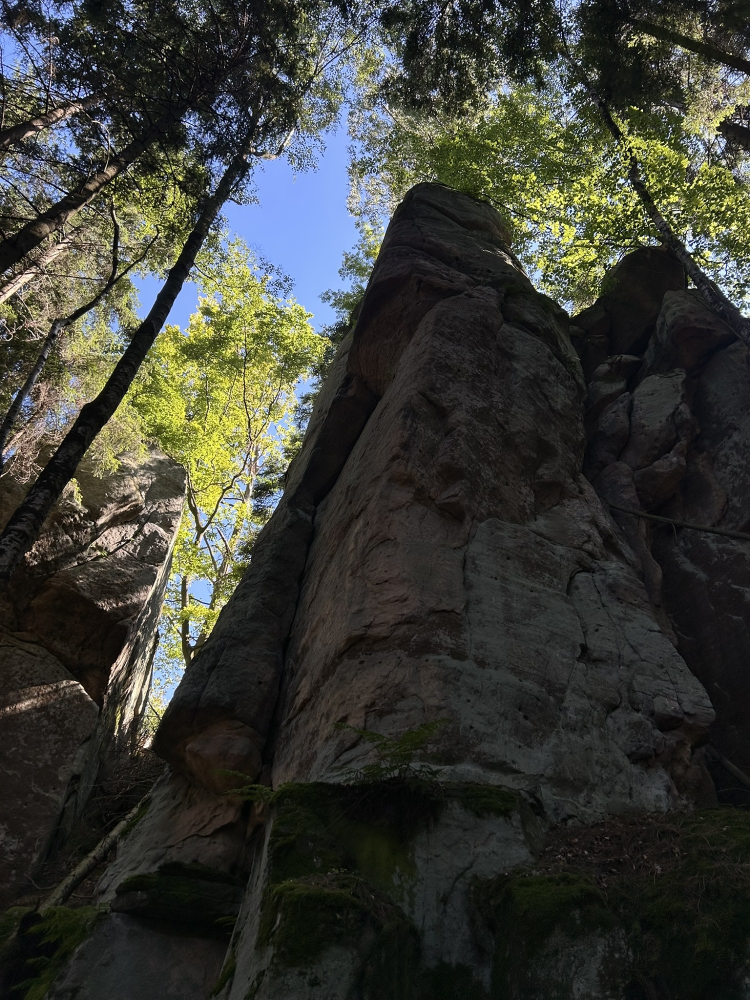
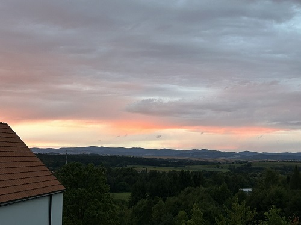

Historia Gór Stołowych jest ściśle powiązana z historią ziemi kłodzkiej. Przez obszary sąsiadujące z Górami Stołowymi już w starożytności przechodziły szlaki handlowe, wzdłuż których powstawały osady. Pierwsze wzmianki o wsiach w regionie pochodzą z XIV w. Szlaków handlowych strzegły wtedy warowne grody, takie jak Zamek Homole, Náchod, Radków i Ratno. Zaczęły się wtedy wykształcać jednostki, które później określono mianami Państewko Homolskie (Duszniki, Lewin Kłodzki i okoliczne wsie), Broumowszczyzna i Państewko Náchodskie. W XIV w. zaczęto przeprowadzać kolonizację na prawie niemieckim prawo magdeburskie, w oparciu głównie o miejscową ludność pochodzenia słowiańskiego. W I poł. XV w. na ziemię kłodzką spadły najazdy husytów, najbardziej niszczycielskie w latach 1425–1434, kiedy to np. zdobyto i spalono Radków. Stała się ona wtedy bazą dla wojsk czeskich, przez co została kilkakrotnie spustoszona i przez ponad sto lat dźwigała się z ruin. Husyci oszczędzali ludność słowiańską, przez co region Gór Stołowych ucierpiał stosunkowo mało. W 1459 r. król czeski, Jerzy z Podiebradów, ustanowił ziemię kłodzką samodzielnym hrabstwem. W 1526 ziemia kłodzka wraz z Czechami i Śląskiem dostały się pod panowanie Habsburgów. W ponadstuletnim okresie pokoju rozwinęło się tu tkactwo, sukiennictwo i papiernictwo, w Kudowie, Polanicy i Dusznikach wybudowano pierwsze obiekty zdrojowe.
...było to bardzo dawno, ponieważ w czasach, kiedy nie było jeszcze granic,
a Słowianie wierzyli w moc starych bogów. Tutaj, gdzie dzisiaj są Błędne Skały,
była wówczas ogromna góra z piaskowca - Skalniak. Wzbudzała ona szacunek, ale i wywoływała lęk.
Każdego roku Słowianie wędrowali w jej stronę i składali górze ofiary.
Modlili się też wtedy o obfite plony. Pewnej wiosny jednak cały pogański rytuał wyglądał inaczej.
owietrzu czuć było coś dziwnego i niewyjaśnionego. Kapłan odprawiający modły dostrzegł w oddali nieznajomą postać.
Dopiero kiedy się do niego zbliżył, rozpoznał w nim Ducha Gór. Gość nie oddał hołdu bogom, a zgromadzeni krzyczeli w jego stronę,
że skończyły się czasy, kiedy to modlili się i składali ofiary właśnie dla niego.
Karkonosz, bo tak nazywał się Duch Gór, tupnął mocno nogą, aż ta się zatrzęsła, a drzewa się posypały.
Z każdym kolejnym tupnięciem skały pękały coraz bardziej.
Góra Skalniak zaczęła się zawalać, aż w końcu przestała istnieć. Ludzie uciekali w popłochu.
Po jakimś czasie nastała cisza. Ocaleni wychodzili z ukrycia i błądzili po skalnych korytarzach.
Ostatecznie niektórym udało się jednak dotrzeć do swojej wioski. Tak powstały Błędne Skały.
Góry Stołowe skrywają jeszcze wiele innych tajemnic..

Autor zdjęć: Gabriela Wróbel
Legenda o Błędnych Skałach
Tekst o Górach Stołowych
Informacje o Górach Stołowych